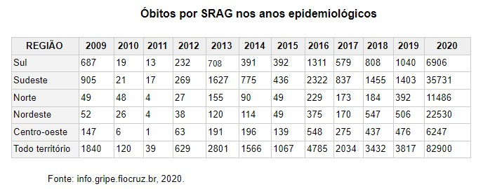

2020 foi um ano muito atípico para todos. Desde que a pandemia de COVID-19 começou em março, as relações sociais e econômicas no Brasil tiveram alterações drásticas. É um momento incerto para toda a população brasileira. Governadores precisam monitorar os casos no território, visando a segurança e higiene pública, enquanto se preocupam também com que haja um movimento comercial suficiente que traga sustentabilidade para os moradores. A responsabilidade individual do povo também se julga importante para achatar a curva do vírus, sendo o isolamento social uma prática importante para prevenir aumento de casos. Ao meio de tudo isso, a dupla deste projeto resolveu apresentar os dados de óbitos por doenças respiratórias, e como eles são divulgados para a população, levando em conta sua consistência pelos sites de informação.
A Síndrome Respiratória Aguda Grave é uma doença respiratória contagiosa. A transmissão ocorre por gotículas expelidas quando a pessoa contaminada fala, espirra ou tosse. Pode ser causada pelo coronavírus (COVID-19), vírus influenza (que causa a gripe), adenovírus (que também pode causar bronquite e pneumonia), e o vírus sincicial respiratório. Sintomas incluem: dores nos músculos, febre, calafrios, mal-estar, desconforto respiratório, infecção, tosse e dor de cabeça. O tratamento atual consiste de cuidados médicos, incluindo: intubação endotraqueal, manejo e desobstrução das vias respiratórias, ventilação mecânica e oxigenoterapia.
De acordo com o boletim semanal do sistema InfoGripe da segunda semana de junho, os casos de SRAG cresceram exponencialmente neste ano, ficando acima do comum, e da média anual. Foram reportados até junho 208.967 casos, com 95.106 sendo classificados como um vírus respiratório. É relatado também que 95,4% dos casos são positivos para o novo coronavírus. O Sistema de Informação da Vigilância Epidemiológica da Gripe detectou um aumento incomum desde março, seguindo o padrão internacional de vigilância sindrômica, podendo também incluir casos que não atendam a todos os sintomas definidos. Atualmente, o filtro utilizado orientado pelo Ministério da Saúde desconsidera os casos por febre, já que não é um sintoma inerente a casos de COVID-19. Afirma Marcelo Gomes, coordenador da plataforma e pesquisador da Fundação Oswaldo Cruz (Fiocruz) que casos de SRAG sem causa definida possam estar relacionados ao novo coronavírus, quando se considera por exemplo, o perfil etário das internações. Com dados disponibilizados até setembro de 2020 no site da Situação da Gripe da fundação, filtrando por óbitos e sintomas, casos que vieram a óbito chegam a 82.900. Mesmo que a Fiocruz considere tais dados como instáveis ou incompletos e sujeito a alterações, proporcionalmente, os óbitos chegam a ser 20 vezes maiores que o ano de 2019 e, especialmente fora do que a SRAG causaria no país nos anos anteriores, como sugere a tabela abaixo.
Uma publicação no portal de notícias Bio em Foco de 30 de junho, afirma que os casos no Brasil de janeiro a maio chegaram aos 168 mil, com 52 mil sendo classificados como COVID-19, de acordo com o boletim do Ministério da Saúde. Isso significaria que em comparação com as informações divulgadas posteriormente pela Fiocruz, os casos identificados como coronavírus dobrariam em menos de um mês. De modo geral, estudos na área acadêmica sobre efeitos pandêmicos e a efetividade de políticas públicas para a redução da transmissão de vírus são bem escassos, considerando que a última vez que houve uma ocorrência tão grave e em escala global relacionado a um vírus foi em 1918, com a gripe espanhola, que levou cerca de 50 milhões ao óbito mundialmente. Em uma análise publicada em 5 de junho de 2020 por Sergio Correia, Stephen Luck e Emil Verner sobre a eficiência de Intervenções Não-Farmacêuticas durante a pandemia da gripe espanhola nos Estados Unidos, relacionando também a atual pandemia de COVID-19, é afirmado que de modo geral a disrupção do comércio foi causada pela pandemia em si, e não pela restrição de atividades não essenciais no país, tendo assim uma ausência de recessão econômica. Na seção de discussão, sinalizam o fato da pesquisa conter especificações que possam dificultar a relação de dados do período e local que a pandemia ocorreu, com a pandemia em 2020, como: amostras de dados se limitarem a apenas 43 cidades; ausência de informações sobre a situação de produção de manufaturados pré-pandemia nos anos de 1915 a 1917, já que dados relacionados não estão disponíveis com frequência anual; ambiente econômico incomum devido a Primeira Guerra Mundial; e análises inter regionais não permitem agregar o equilíbrio de efeitos das intervenções. Logo após, citam que chegar a uma resposta definitiva dos mecanismos exatos que afetaram a economia na época com os dados limitados disponíveis é uma tarefa de grande dificuldade. Em conclusão, afirmam que as intervenções de políticas públicas definitivamente tem benefício econômico, e que reduzir a gravidade da pandemia é essencial para a população. Ao comparar a COVID-19 a outras doenças que são principais causas de mortes no Brasil e no mundo, há uma complicação em obtenção de dados pela subnotificações de casos, que ocorre em grande ou pequena escala em cada país. Em uma notícia disponibilizada no site da BBC News Brasil em 14 de maio afirma que pesquisas realizadas em universidades citam a possibilidade dos casos serem de 12 a 16 vezes maiores do que os números reportados. A subnotificação se dá pelos registros oficiais contarem apenas os pacientes que chegam ao óbito em hospitais e que tiveram exames positivos para o vírus. Diagnósticos imprecisos e mortes ocorridas em casa e lares de idosos por exemplo nem sempre são levadas em conta nas estatísticas. Outro fenômeno apresentado por especialistas é o “efeito transbordamento”, que ocorre quando a pandemia tem impacto em outras causas de morte, interrompendo pesquisas que ajudariam no tratamento de doenças e situações de pobreza em países menos desenvolvidos, afirma Hannah Ritchie, chefe de pesquisa do projeto Our World in Data, da universidade de Oxford.